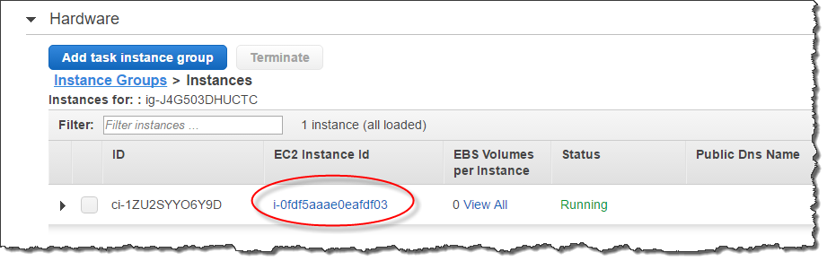

Terjemahan disediakan oleh mesin penerjemah. Jika konten terjemahan yang diberikan bertentangan dengan versi bahasa Inggris aslinya, utamakan versi bahasa Inggris.
Membuat skema eksternal untuk Amazon Redshift Spectrum
Semua tabel eksternal harus dibuat dalam skema eksternal, yang Anda buat menggunakan BUAT SKEMA EKSTERNAL pernyataan.
catatan
Beberapa aplikasi menggunakan istilah database dan skema secara bergantian. Di Amazon Redshift, kami menggunakan istilah skema.
Skema eksternal Amazon Redshift mereferensikan database eksternal dalam katalog data eksternal. Anda dapat membuat database eksternal di Amazon Redshift, di Amazon Athena, di, atau AWS Glue Data Catalogdi metastore Apache Hive, seperti Amazon EMR. Jika Anda membuat database eksternal di Amazon Redshift, database berada di Katalog Data Athena. Untuk membuat database di metastore Hive, Anda perlu membuat database di aplikasi Hive Anda.
Amazon Redshift memerlukan otorisasi untuk mengakses Katalog Data di Athena dan file data di Amazon S3 atas nama Anda. Untuk memberikan otorisasi tersebut, pertama-tama Anda membuat peran AWS Identity and Access Management (IAM). Kemudian Anda melampirkan peran ke cluster Anda dan memberikan Amazon Resource Name (ARN) untuk peran dalam pernyataan Amazon CREATE EXTERNAL SCHEMA Redshift. Untuk informasi selengkapnya tentang otorisasi, lihatKebijakan IAM untuk Amazon Redshift Spectrum.
catatan
Jika saat ini Anda memiliki tabel eksternal Redshift Spectrum di Katalog Data Athena, Anda dapat memigrasikan Katalog Data Athena ke Katalog Data. AWS Glue Untuk menggunakan Katalog AWS Glue Data dengan Redshift Spectrum, Anda mungkin perlu mengubah kebijakan IAM Anda. Untuk informasi selengkapnya, lihat Memutakhirkan ke Katalog AWS Glue Data di Panduan Pengguna Amazon Athena.
Untuk membuat database eksternal pada saat yang sama Anda membuat skema eksternal, tentukan FROM DATA CATALOG dan sertakan CREATE EXTERNAL DATABASE klausa dalam pernyataan AndaCREATE EXTERNAL SCHEMA.
Contoh berikut membuat skema eksternal bernama spectrum_schema menggunakan database spectrum_db eksternal.
create external schema spectrum_schema from data catalog database 'spectrum_db' iam_role 'arn:aws:iam::123456789012:role/MySpectrumRole' create external database if not exists;
Jika Anda mengelola katalog data menggunakan Athena, tentukan nama database Athena dan AWS Wilayah tempat Katalog Data Athena berada.
Contoh berikut membuat skema eksternal menggunakan sampledb database default di Athena Data Catalog.
create external schema athena_schema from data catalog database 'sampledb' iam_role 'arn:aws:iam::123456789012:role/MySpectrumRole' region 'us-east-2';
catatan
regionParameter tersebut mereferensikan AWS Wilayah tempat Katalog Data Athena berada, bukan lokasi file data di Amazon S3.
Jika Anda mengelola katalog data menggunakan metastore Hive, seperti Amazon EMR, grup keamanan Anda harus dikonfigurasi untuk mengizinkan lalu lintas antar kluster.
Dalam pernyataan CREATE EXTERNAL SCHEMA, tentukan FROM HIVE METASTORE dan sertakan URI dan nomor port metastore. Contoh berikut membuat skema eksternal menggunakan database metastore Hive bernama. hive_db
create external schema hive_schema from hive metastore database 'hive_db' uri '172.10.10.10' port 99 iam_role 'arn:aws:iam::123456789012:role/MySpectrumRole'
Untuk melihat skema eksternal untuk klaster Anda, kueri tabel katalog PG_EXTERNAL_SCHEMA atau tampilan SVV_EXTERNAL_SCHEMAS. Contoh berikut query SVV_EXTERNAL_SCHEMAS, yang bergabung dengan PG_EXTERNAL_SCHEMA dan PG_NAMESPACE.
select * from svv_external_schemas
Untuk sintaks perintah lengkap dan contoh, lihatBUAT SKEMA EKSTERNAL.
Bekerja dengan katalog eksternal di Amazon Redshift Spectrum
Metadata untuk database eksternal Amazon Redshift Spectrum dan tabel eksternal disimpan dalam katalog data eksternal. Secara default, metadata Redshift Spectrum disimpan dalam Katalog Data Athena. Anda dapat melihat dan mengelola database dan tabel Redshift Spectrum di konsol Athena Anda.
Anda juga dapat membuat dan mengelola database eksternal dan tabel eksternal menggunakan bahasa definisi data Hive (DDL) menggunakan Athena atau metastore Hive, seperti Amazon EMR.
catatan
Sebaiknya gunakan Amazon Redshift untuk membuat dan mengelola database eksternal dan tabel eksternal di Redshift Spectrum.
Melihat database Redshift Spectrum di Athena dan AWS Glue
Anda dapat membuat database eksternal dengan menyertakan klausa CREATE EXTERNAL DATABASE IF NOT EXISTS sebagai bagian dari pernyataan CREATE EXTERNAL SCHEMA Anda. Dalam kasus seperti itu, metadata database eksternal disimpan dalam Katalog Data Anda. Metadata untuk tabel eksternal yang Anda buat memenuhi syarat oleh skema eksternal juga disimpan dalam Katalog Data Anda.
Athena dan AWS Glue memelihara Katalog Data untuk setiap yang didukung. Wilayah AWS Untuk melihat metadata tabel, masuk ke Athena atau konsol. AWS Glue Di Athena, pilih Sumber data, milik AndaAWS Glue, lalu lihat detail database Anda. DiAWS Glue, pilih Database, database eksternal Anda, lalu lihat detail database Anda.
Jika Anda membuat dan mengelola tabel eksternal menggunakan Athena, daftarkan database menggunakan CREATE EXTERNAL SCHEMA. Misalnya, perintah berikut mendaftarkan database Athena bernama. sampledb
create external schema athena_sample from data catalog database 'sampledb' iam_role 'arn:aws:iam::123456789012:role/mySpectrumRole' region 'us-east-1';
Saat Anda menanyakan tampilan sistem SVV_EXTERNAL_TABLES, Anda akan melihat tabel di sampledb database Athena dan juga tabel yang Anda buat di Amazon Redshift.
select * from svv_external_tables;
schemaname | tablename | location --------------+------------------+-------------------------------------------------------- athena_sample | elb_logs | s3://athena-examples/elb/plaintext athena_sample | lineitem_1t_csv | s3://myspectrum/tpch/1000/lineitem_csv athena_sample | lineitem_1t_part | s3://myspectrum/tpch/1000/lineitem_partition spectrum | sales | s3://redshift-downloads/tickit/spectrum/sales spectrum | sales_part | s3://redshift-downloads/tickit/spectrum/sales_part
Mendaftarkan database metastore Apache Hive
Jika Anda membuat tabel eksternal dalam metastore Apache Hive, Anda dapat menggunakan CREATE EXTERNAL SCHEMA untuk mendaftarkan tabel tersebut di Redshift Spectrum.
Dalam pernyataan CREATE EXTERNAL SCHEMA, tentukan klausa FROM HIVE METASTORE dan berikan URI metastore Hive dan nomor port. Peran IAM harus menyertakan izin untuk mengakses Amazon S3 tetapi tidak memerlukan izin Athena. Contoh berikut mendaftarkan metastore Hive.
create external schema if not exists hive_schema from hive metastore database 'hive_database' uri 'ip-10-0-111-111.us-west-2.compute.internal' port 9083 iam_role 'arn:aws:iam::123456789012:role/mySpectrumRole';
Mengaktifkan klaster Amazon Redshift Anda untuk mengakses kluster EMR Amazon Anda
Jika metastore Hive Anda ada di Amazon EMR, Anda harus memberikan akses kluster Amazon Redshift ke cluster EMR Amazon Anda. Untuk melakukannya, Anda membuat grup keamanan Amazon EC2. Anda kemudian mengizinkan semua lalu lintas masuk ke grup keamanan EC2 dari grup keamanan klaster Amazon Redshift dan grup keamanan klaster Amazon EMR Anda. Kemudian Anda menambahkan keamanan EC2 ke cluster Amazon Redshift dan cluster EMR Amazon Anda.
Lihat nama grup keamanan klaster Amazon Redshift Anda
Untuk menampilkan grup keamanan, lakukan hal berikut:
-
Masuklah ke AWS Management Console dan buka konsol Amazon Redshift di https://console.aws.amazon.com/redshift/
. -
Pada menu navigasi, pilih Cluster, lalu pilih cluster dari daftar untuk membuka detailnya.
-
Pilih Properti dan lihat bagian Pengaturan Jaringan dan keamanan.
-
Temukan grup keamanan Anda di grup keamanan VPC dan catat.
Lihat nama grup keamanan simpul master EMR Amazon
Buka cluster EMR Amazon Anda. Untuk informasi selengkapnya, lihat Menggunakan konfigurasi keamanan untuk menyiapkan keamanan klaster di Panduan Manajemen EMR Amazon.
Di bawah Keamanan dan akses, catat nama grup keamanan simpul master Amazon EMR.

Untuk membuat atau memodifikasi grup keamanan Amazon EC2 untuk memungkinkan koneksi antara Amazon Redshift dan Amazon EMR
Di dasbor Amazon EC2, pilih Grup keamanan. Untuk informasi selengkapnya, lihat Aturan grup keamanan di Panduan Pengguna Amazon EC2 untuk Instans Linux
Pilih Buat grup keamanan.
Jika Anda menggunakan VPC, pilih VPC tempat Amazon Redshift dan Amazon EMR cluster Anda berada.
Tambahkan aturan masuk.
Untuk Jenis, pilih TCP khusus.
Untuk Sumber, pilih Kustom.
Masukkan nama grup keamanan Amazon Redshift Anda.
Tambahkan aturan masuk lainnya.
Untuk Type, pilih TCP.
Untuk Port Range, masukkan 9083.
catatan
Port default untuk EMR HMS adalah 9083. Jika HMS Anda menggunakan port yang berbeda, tentukan port itu dalam aturan masuk dan dalam definisi skema eksternal.
Untuk Sumber, pilih Kustom.
Masukkan nama dan deskripsi grup keamanan.
Pilih Buat grup keamanan.
Untuk menambahkan grup keamanan Amazon EC2 yang Anda buat di prosedur sebelumnya ke cluster Amazon Redshift Anda
Di Amazon Redshift, pilih cluster Anda.
Pilih Properti.
Lihat pengaturan Jaringan dan keamanan dan pilih Edit.
Di grup keamanan VPC, pilih nama grup keamanan baru.
Pilih Simpan perubahan.
Untuk menambahkan grup keamanan Amazon EC2 ke cluster EMR Amazon Anda
Di Amazon EMR, pilih cluster Anda. Untuk informasi selengkapnya, lihat Menggunakan konfigurasi keamanan untuk menyiapkan keamanan klaster di Panduan Manajemen EMR Amazon.
Di bawah Hardware, pilih link untuk node Master.
Pilih tautan di kolom ID instans EC2.
Untuk Tindakan, pilih Keamanan, Ubah grup keamanan.
Di Grup sercurity terkait, pilih grup keamanan baru, dan pilih Tambahkan grup keamanan.
Pilih Simpan.